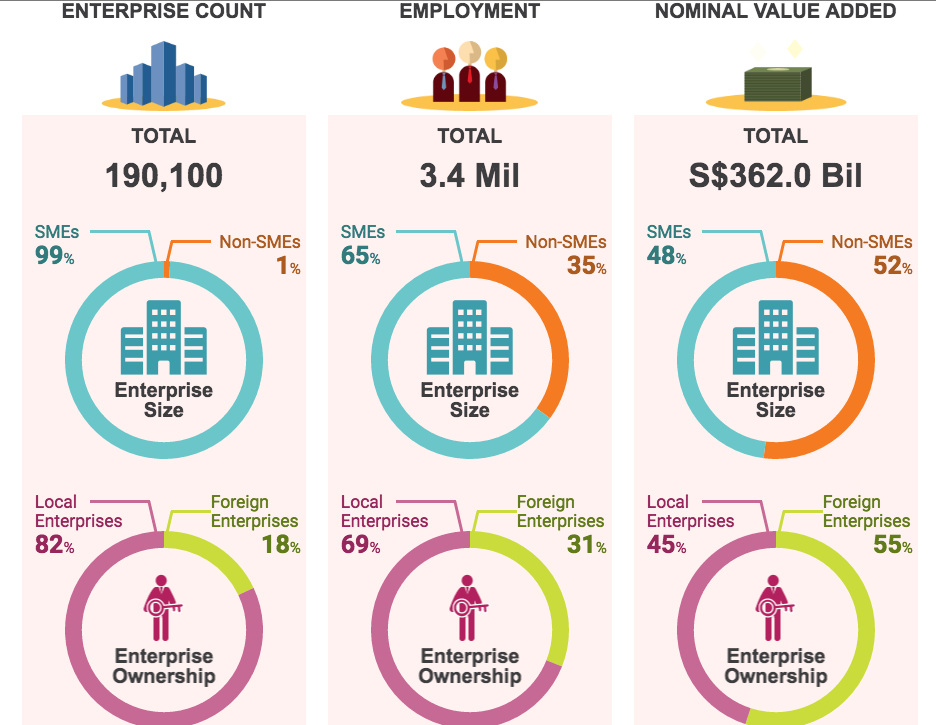

Guest post: Inside the revolutionary sub-culture taking over government
Nothing has the transformative potential for civil servants' work as open data. Apolitical Editor Alex Starritt shares insights from leaders about their epiphany moment, and what made it impossible for them not to want to drive the movement forward
By Alex Starritt
There is an almost visionary sub-culture within governments around the world whose adherents believe it will become as indispensable, ubiquitous and invisible as electricity.
That sub-culture has the opaque name ‘open data’ and, though almost everyone has heard the term, few people outside the movement really grasp what it actually means.
Yet it is true that almost nothing – perhaps nothing at all – has the potential to so fundamentally change the work of every civil servant. Although it comes with concerns about privacy, it promises to expose corruption, create jobs and allow civil servants to measure everything happening in the real world as it happens and so let them solve citizens’ problems as or even before they arise. At heart, it is a belief that information creates change.
A US map showing where schools are good, jobs plentiful and living costs low
One of the best ways to understand open data is to look at its people because, as Enrique Zapata, who trained in international relations and is Mexico’s Deputy Director General of Open Data, told Apolitical, ‘Once you get into it, you see the technical part is only one thing and that it’s a cultural thing, another way of doing things, another mentality.’
Apolitical asked global leaders in the open data field what that mentality consists of, and their answers reveal a culture of innovation as well as highlighting what characterises some of the world’s most forward-thinking public servants. Next week we will be writing about how they imagine a future saturated with open data – and what we have to do to get there.
Information creates change
The first trait revealed was an automatic belief in collaboration and a willingness to share what they’re working on. Zapata told Apolitical that he is in a WhatsApp group with people from dozens of other countries where they can fire out questions or problems and get immediate responses.
He said, ‘I see a group of people that are globally minded, where local or national boundaries aren’t barriers for them to work with others. I see that they use alternative channels – like Skype or WhatsApp – and find new ways of communicating and working with other governments and other actors. I think that’s very important and people don’t see it because it’s a very operational thing.’
An attitude of openness and sharing tends to be most prevalent in those in their thirties or younger, that is, millennials, or among people working in tech. The millennials have learned the habit from social media, while those in tech have often learned it from working with open-source software – which is publicly available and which anyone can edit or adapt, meaning it ends up being collaboratively developed.
 A Singaporean graphic showing trends in its economy
The second trait was a willingness to do things that hadn’t been mandated and that might not work. Open data adherents are, according to Marija Kujačić, Head of E-Government Development in Serbia, ‘not afraid of doing something they haven’t been told they are supposed to do. It’s very common that people do just what they’ve been told to, and there’s this attitude that says, don’t touch me, I’m just inside my own borders. It’s a willingness to think outside the job.’
That willingness to take risks – untypical of the public sector – means that many people working in open data came from private enterprise or NGOs. Overall, however, what unites these people more than any demographic trend is a fervent belief that if this mentality can be spread, it will ease billions of lives in ways that are not the stuff of high politics – like public transport, school locations, safer roads – but ameliorate a quotidian that high politics can rarely touch.
Several of the leaders described a moment of epiphany when they heard about the idea; others said that you had to experience it to understand its power for transformation and that that understanding, once gained, made it impossible not to want to drive the movement forward. As Alka Mishra, who leads India’s open data work, told Apolitical: ‘It’s the true appreciation which counts.’
Insights from the open data leaders
Carolina Pozo, Executive Director of Quito's Innovation Lab, Ecuador
After a Masters in Public Management and a diploma from business school, Carolina joined government three years ago, at 27. She started Quito’s open data work after hearing about it from a friend in Costa Rica and has won a competition to use Microsoft’s artificial intelligence, drawing on machine learning to optimise things like public transport networks.
‘The main characteristic of people in open data is that they’re young. Younger people are more exposed to social media, digital tools and the idea of access to information and I think to the concept itself because, from a personal perspective, when you’re young you want access to everything all the time.
‘Open data also goes better with open-minded, digital-minded sorts of people, who are flexible in their work. They’re people who have international connections, because you know the whole open government movement goes around the international Open Government Partnership, the Open Data Institute and collaboration between cities.
The main characteristic is that they’re young
‘It’s people who have a mind for implementation, young people who are really results-oriented, making use of data, not just publishing data for the hell of it, but looking at the value and how it could be connected to civic participation.
‘Part of it is fashion. Twenty years ago, the main topic was globalisation, but who talks about that now? So it is generational. And the future is linking lots of different data sets and putting them on maps.’
A visualisation of Quito’s budget, showing spending in relative terms.
Malick Tapsoba, Deputy Manager of the Burkina Faso Open Data Initiative
One of the stars of the open data scene, Malick was instrumental in running Burkina Faso’s first free elections for 30 years. To undo tensions during the often incendiary wait between voting and results, he set up a system to publish the count in real time.
‘I think it’s a personal quality. Some people are like that, and some people aren’t.
‘The people working in open data share easily the information they have. They have a spirit, a culture of sharing. I think it’s a personal quality and it’s also about background. Most have an IT background and have worked with open-source tools and with the development of social media, so they’ve developed a culture of sharing the things they have.’
‘They’re not necessarily young, but almost everyone – 80% of people I know working in open data – are very young. They know social media. They have a personal characteristic and then they have developed this characteristic with Facebook, Twitter, Instagram. Social media has helped them improve this quality of sharing.’
Enrique Zapata, Deputy Director General, Open data, Mexico
When Mexico’s first open data team was founded, Enrique was the only one of the seven who had government experience. He came to open data after working on international trade agreements and is trying to encourage small and medium-sized businesses, as well as the government itself, to take advantage of the data government is publishing.
‘I’m a policy guy, not a technical guy. They told me, you’re going to do something called open data, and I freaked out. Three years later, I’m trying to push open data in every single sector in Mexico and around the world.
‘The people in it mostly come from outside government and they’re not risk-averse, which is very important. In government, you find a lot of people who don’t see failure as a way of actually learning what not to do, so you don’t replicate a failure at a bigger scale.
They told me, you’re doing open data, and I freaked out
‘It’s the culture of risk-aversion, of sending memos that have to be checked and vetoed by ten people before they’re sent. I thought that’s how things in government were done. But it’s changing because these new people are coming in. What I tend to see is that people make the projects first, show their impact, and then make them official towards the very end.
‘It’s also generational. People today have a higher expectation of government. Two decades ago, if you weren’t experiencing a lack of electricity in your house, you wouldn’t know that that’s a problem. But now if other people are tweeting about it, you actually see what’s happening and that government isn’t reacting as it should. That’s very palpable right now.
‘In open data I see a group of people all over the world who actually understand what the potential is for the benefit of everyone. I think a big challenge is that that understanding is only in our community, and we have to start permeating other communities, say, the corruption guys. We shouldn’t be talking about data with them, we should be talking about corruption with them. But it’s something you only really understand when you experience it.’
Part of a map showing thousands of Mexican reconstruction projects after Hurricanes Manuel and Ingrid
Marija Kujacic, Head of e-Government Development, Serbia
Marija worked in tech and did a Masters in Artificial Intelligence before running her own company for more than a decade. She joined government 12 years ago and is leading Serbia’s nascent work on open data.
‘It’s very common that IT people understand open data faster and better than, let’s say, lawyers, who are the majority in public administration. IT people come to it more easily because they need to learn all the time and work in unfamiliar areas. Each IT project is something completely new. They have to be very quick and explorative.
‘They’re not afraid of doing something new, of doing something they haven’t been told they are supposed to do.
People don’t want to expose their work publicly
‘But the other characteristic is openness, because people here in Serbia are not used to being exposed to the public. It goes from the very top, politicians and the big decisions, all the way down to say, doctors and how many patients they have in a day. That’s very, very deeply rooted here. People don’t want to expose their work publicly. But people who do their jobs properly and honestly don’t need to be afraid of it.
‘Working in IT and running my own business shaped my way of thinking and when I heard about open data, in that moment I was amazed by the power of this initiative. I thought OK, this is it, this needs to be supported. This is something which can make change. This is something that, once it’s started, you can’t stop.’
Alex Starritt is Editor at Apolitical. Follow @apoliticalco on Twitter.
This piece was written as part of a content partnership with Apolitical, an international platform for innovators in public service, and first appeared on the Apolitical website.
If you have ideas or experience in open data that you’d like to share, pitch us a blog or tweet us at @ODIHQ.